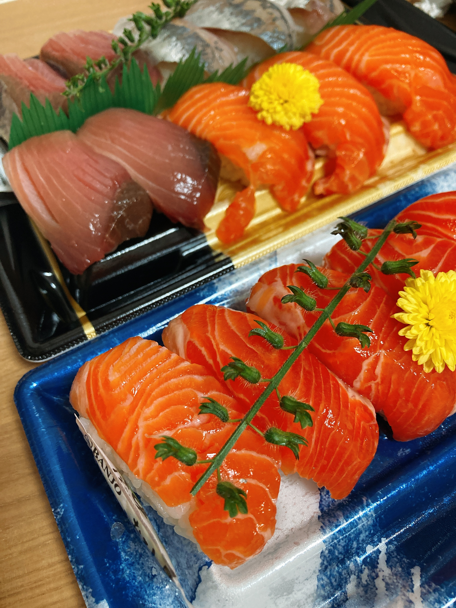

なんかまだ忙しい
任意の音ゲーアプデしてない？WACCAが大型アプデだしちゃっかりコラボでArcaeaにも曲増えてるし、ダンカグが初イベント開始するし、Caelytaがアプデ前メンテの後戻ってこないし。ゲーセンには週末行くからいいとして、Arcaeaのマップ走りとダンカグのイベント走りを並行するのがキツい。いや、夏休みなら可能な程度のタスクではあるんだけど、まだ夏休み始まってないし始まったとしても平日日中が諸事情で使えないのでちょっと厳しい。まあ程々にがんばるかあ。一番しんどいのはダンカグでイベント走りながらWRスコアタ詰めないといけないことですね。後者によって編成が制限されてしまうのでポイント収率が……1。
他にも残留課題がいくつかあるので大変だなあ。
昨日にこにこしながら長文生成していたわけですが、眠気が勝るとどうやらああ上手くはいかないらしい。というのも、今（334近傍広義今日）、友人の日記の環境構築の手助けをしていたのでとんでもない夜ふかしをしてしまっているという。本当は今日知人の日記まとめ長文を生成するつもりでいたんだけど、今日手伝った分がこの後一本追加されるはずなので、明日他に書くことがなければ書こうかな。
今日の飯は爆アド寿司。

珍しくサーモンがあった。ただでさえ美味い寿司のサーモンとなるとガチで美味い。知り合いのサーモン好きを煽ってやろうかと思ったけど、全然そういう状況じゃなさそうなので自重した。そういえばブログぶっち500日目な気もするけどそれも黙っておこう。メンテめちゃくちゃしんどそう、がんばってください……。
おはようございます！本日の東京の天気は晴れ、最高気温は37℃、金具（@Kanagu_Requiem）のブログ投稿予定日から500日、traP新歓ブログリレー2020終了から447日、Mary（@WWVsbG93IFJvc2U）の部費滞納（traP除名）から71日経ちました！
— セチ (@secvod) August 10, 2021
-
スコアタのためには判定強化スキルのキャラを編成から除かなければいけないという。そしてよりによって判定強化スキルのキャラに限ってステータスが強い。 ↩︎